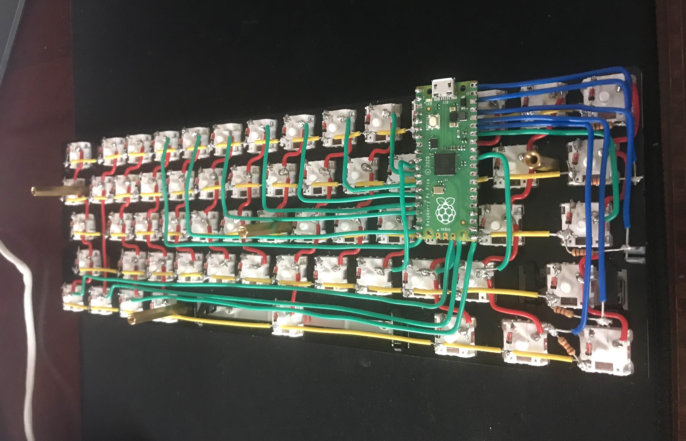
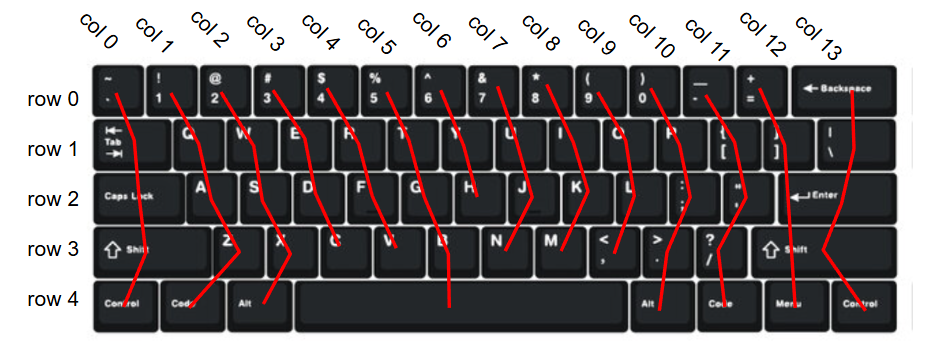

Keyboard
This is a handwired 60% keyboard I built and programmed using a Rasberry Pi Pico.
Supplies
- Rasberry Pi Pico
- 1N4148 Diodes (x61)
- Stabilizers
- 60% Plate
- Keycaps
A straighforward way to register inputs from buttons would be to wire them on their own directly to the controller. However, keyboards have many keys, and a controller would need to have an input pin for each key if each key were to be connected seperately. Keyboard matrices help with this. The circuit is organized into rows and columns so that each key can be identified by thier row and column number. For my 60%, this means I only need to connect 19 gpio pins instead of 61. Diodes are also needed in this circuit to prevent ghosting, which occurs when a keyboard cannot register some keys when multiple of them are being pressed at the same time.
Key presses are read by the microcontroller with matrix scanning. In the code, each column is one at a time set to high. At the same time the microcontroller reads all of the rows. If for example column 3 is set to high and row 1 is also high at the same time, then the key at row 1, column 3 is being pressed.
With CircuitPython I used the Adafruit HID library to simulate USB HID devices.